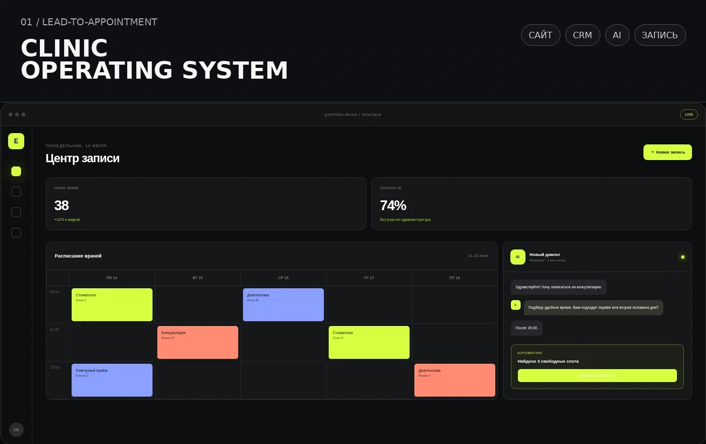
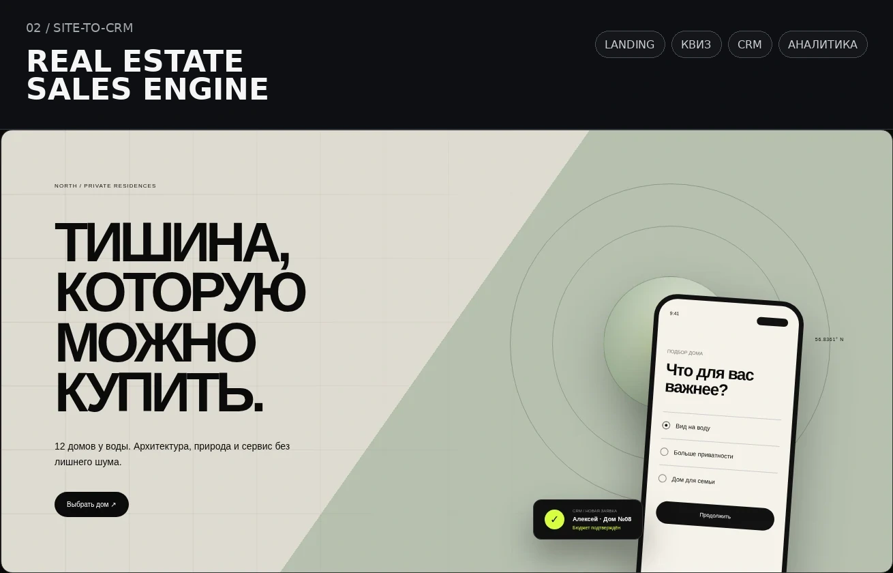
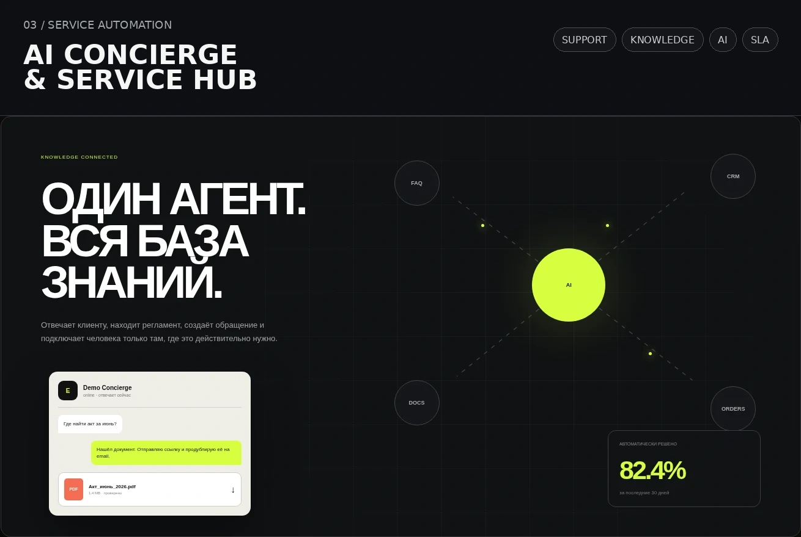

01 / PROJECTSSELECTED WORK 2026
Проекты,
собранные как пространства.
Три демонстрационных концепта, показывающих подход к структуре, типографике, интерфейсу и продуктовой логике.

Цифровой центр записи и работы с обращениями для клиники.
Открыть проект ↗
Редакционная подача недвижимости и сценарий подбора дома.
Открыть проект ↗
Интерфейс AI‑агента, объединяющего знания и поддержку.
Открыть проект ↗NOTE
Это концептуальные работы, а не кейсы реальных клиентов. Они созданы для демонстрации уровня визуальной и продуктовой проработки.